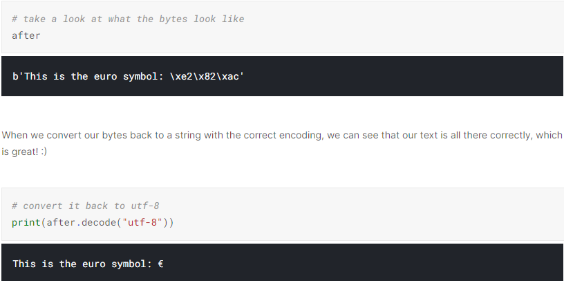

kaggle Data Cleaning
Handling Missing Values
How many missing data points do we have?
# get the number of missing data points per column
missing_values_count = nfl_data.isnull().sum()
# look at the # of missing points in the first ten columns
missing_values_count[0:10]# how many total missing values do we have?
total_cells = np.product(nfl_data.shape)
total_missing = missing_values_count.sum()
# percent of data that is missing
percent_missing = (total_missing/total_cells) * 100
print(percent_missing)Figure out why the data is missing
This is the point at which we get into the part of data science that I like to call “data intution”, by which I mean “really looking at your data and trying to figure out why it is the way it is and how that will affect your analysis”.
For dealing with missing values, you’ll need to use your intution to figure out why the value is missing. One of the most important questions you can ask yourself to help figure this out is this:
Is this value missing because it wasn’t recorded or because it doesn’t exist?
If a value is missing becuase it doesn’t exist (like the height of the oldest child of someone who doesn’t have any children) then it doesn’t make sense to try and guess what it might be. These values you probably do want to keep as NaN. On the other hand, if a value is missing because it wasn’t recorded, then you can try to guess what it might have been based on the other values in that column and row. This is called imputation.
If you’re doing very careful data analysis, this is the point at which you’d look at each column individually to figure out the best strategy for filling those missing values.
Drop missing values
If you’re in a hurry or don’t have a reason to figure out why your values are missing, one option you have is to just remove any rows or columns that contain missing values. (Note: I don’t generally recommend this approch for important projects! It’s usually worth it to take the time to go through your data and really look at all the columns with missing values one-by-one to really get to know your dataset.)
If you’re sure you want to drop rows with missing values, pandas does have a handy function, dropna() to help you do this.
Filling in missing values automatically
We can use the Panda’s fillna() function to fill in missing values in a dataframe for us. One option we have is to specify what we want the NaN values to be replaced with.
I could also be a bit more savvy and replace missing values with whatever value comes directly after it in the same column. (This makes a lot of sense for datasets where the observations have some sort of logical order to them.)
# replace all NA's the value that comes directly after it in the same column,
# then replace all the remaining na's with 0
subset_nfl_data.fillna(method='bfill', axis=0).fillna(0)Exercise
# TODO: Your code here!
sf_permits.head()# TODO: Your code here!
percent_missing = sf_permits.isnull().sum().sum() / np.product(sf_permits.shape) * 100
# Check your answer
q2.check()
# TODO: Your code here
sf_permits_with_na_dropped = sf_permits.dropna(axis=1)
dropped_columns = len(sf_permits.columns) - len(sf_permits_with_na_dropped.columns)
# Check your answer
q5.check()# TODO: Your code here
sf_permits_with_na_imputed = sf_permits.fillna(method='bfill', axis=0).fillna(0)
# Check your answer
q6.check()Scaling and Normalization
Scaling vs. Normalization: What’s the difference?
- in scaling, you’re changing the range of your data, while
- in normalization, you’re changing the shape of the distribution of your data.
Scaling
This means that you’re transforming your data so that it fits within a specific scale, like 0-100 or 0-1.
By scaling your variables, you can help compare different variables on equal footing.
Notice that the shape of the data doesn’t change, but that instead of ranging from 0 to 8ish, it now ranges from 0 to 1.
Normalization
Normalization is a more radical transformation. The point of normalization is to change your observations so that they can be described as a normal distribution.
In general, you’ll normalize your data if you’re going to be using a machine learning or statistics technique that assumes your data is normally distributed
Notice that the shape of our data has changed. Before normalizing it was almost L-shaped. But after normalizing it looks more like the outline of a bell (hence “bell curve”).
Exercise
# TODO: Your code here
scaled_goal_data = minmax_scaling(original_goal_data, ['goal'], 0, 1)
# Check your answer
q1.check()Parsing Dates
Notice that at the bottom of the output of head(), you can see that it says that the data type of this column is “object”.
Pandas uses the “object” dtype for storing various types of data types, but most often when you see a column with the dtype “object” it will have strings in it.
If you check the pandas dtype documentation here, you’ll notice that there’s also a specific datetime64 dtypes. Because the dtype of our column is object rather than datetime64, we can tell that Python doesn’t know that this column contains dates.
You may have to check the numpy documentation to match the letter code to the dtype of the object. “O” is the code for “object”, so we can see that these two methods give us the same information.
Convert our date columns to datetime
We can pandas what the format of our dates are with a guide called as “strftime directive”, which you can find more information on at this link. The basic idea is that you need to point out which parts of the date are where and what punctuation is between them. There are lots of possible parts of a date, but the most common are %d for day, %m for month, %y for a two-digit year and %Y for a four digit year.
Some examples:
- 1/17/07 has the format “%m/%d/%y”
- 17-1-2007 has the format “%d-%m-%Y”
- What if I run into an error with multiple date formats? While we’re specifying the date format here, sometimes you’ll run into an error when there are multiple date formats in a single column. If that happens, you have have pandas try to infer what the right date format should be. You can do that like so:
landslides['date_parsed'] = pd.to_datetime(landslides['Date'], infer_datetime_format=True)- Why don’t you always use
infer_datetime_format = True?There are two big reasons not to always have pandas guess the time format. The first is that pandas won’t always been able to figure out the correct date format, especially if someone has gotten creative with data entry. The second is that it’s much slower than specifying the exact format of the dates.
Selecting the day of the month
Plot the day of the month to check the date parsing
One of the biggest dangers in parsing dates is mixing up the months and days. The to_datetime() function does have very helpful error messages, but it doesn’t hurt to double-check that the days of the month we’ve extracted make sense.
To do this, let’s plot a histogram of the days of the month. We expect it to have values between 1 and 31 and, since there’s no reason to suppose the landslides are more common on some days of the month than others, a relatively even distribution. (With a dip on 31 because not all months have 31 days.) Let’s see if that’s the case:
Character Encodings
What are encodings?
Character encodings are specific sets of rules for mapping from raw binary byte strings (that look like this: 0110100001101001) to characters that make up human-readable text (like “hi”). There are many different encodings, and if you tried to read in text with a different encoding than the one it was originally written in, you ended up with scrambled text called “mojibake” (said like mo-gee-bah-kay). Here’s an example of mojibake:
æ–‡å—化ã??
You might also end up with a “unknown” characters. There are what gets printed when there’s no mapping between a particular byte and a character in the encoding you’re using to read your byte string in and they look like this:
����������
Character encoding mismatches are less common today than they used to be, but it’s definitely still a problem. There are lots of different character encodings, but the main one you need to know is UTF-8.
UTF-8 is the standard text encoding. All Python code is in UTF-8 and, ideally, all your data should be as well. It’s when things aren’t in UTF-8 that you run into trouble.
If you look at a bytes object, you’ll see that it has a b in front of it, and then maybe some text after. That’s because bytes are printed out as if they were characters encoded in ASCII. (ASCII is an older character encoding that doesn’t really work for writing any language other than English.) Here you can see that our euro symbol has been replaced with some mojibake that looks like “” when it’s printed as if it were an ASCII string.

However, when we try to use a different encoding to map our bytes into a string, we get an error. This is because the encoding we’re trying to use doesn’t know what to do with the bytes we’re trying to pass it. You need to tell Python the encoding that the byte string is actually supposed to be in.
Like I said earlier, strings are UTF-8 by default in Python 3, so if we try to treat them like they were in another encoding we’ll create problems.
Reading in files with encoding problems
Notice that we get the same UnicodeDecodeError we got when we tried to decode UTF-8 bytes as if they were ASCII! This tells us that this file isn’t actually UTF-8. We don’t know what encoding it actually is though. One way to figure it out is to try and test a bunch of different character encodings and see if any of them work. A better way, though, is to use the chardet module to try and automatically guess what the right encoding is. It’s not 100% guaranteed to be right, but it’s usually faster than just trying to guess.
What if the encoding chardet guesses isn’t right? Since chardet is basically just a fancy guesser, sometimes it will guess the wrong encoding. One thing you can try is looking at more or less of the file and seeing if you get a different result and then try that.
Saving your files with UTF-8 encoding
The good news is, since UTF-8 is the standard encoding in Python, when you save a file it will be saved as UTF-8 by default:
Exercise
new_entry = sample_entry.decode('big5-tw').encode('utf-8')
# Check your answer
q1.check()# TODO: Load in the DataFrame correctly.
with open("../input/fatal-police-shootings-in-the-us/PoliceKillingsUS.csv", 'rb') as rawdata:
result = chardet.detect(rawdata.read(30000))
print(result)
police_killings = pd.read_csv("../input/fatal-police-shootings-in-the-us/PoliceKillingsUS.csv", encoding='Windows-1252')
# Check your answer
q2.check()# TODO: Save the police killings dataset to CSV
police_killings.to_csv("/kaggle/working/my_file.csv")
# Check your answer
q3.check()Inconsistent Data Entry
Do some preliminary text pre-processing
Use fuzzy matching to correct inconsistent data entry
We’re going to use the fuzzywuzzy package to help identify which strings are closest to each other. This dataset is small enough that we could probably could correct errors by hand, but that approach doesn’t scale well.
Fuzzy matching: The process of automatically finding text strings that are very similar to the target string. In general, a string is considered “closer” to another one the fewer characters you’d need to change if you were transforming one string into another. So “apple” and “snapple” are two changes away from each other (add “s” and “n”) while “in” and “on” and one change away (rplace “i” with “o”). You won’t always be able to rely on fuzzy matching 100%, but it will usually end up saving you at least a little time.
Fuzzywuzzy returns a ratio given two strings. The closer the ratio is to 100, the smaller the edit distance between the two strings.